MSc Neuro-X, EPFL – Medical Research Assistant, CHUV
I am a Neuroscience Engineer with a strong interest in using computational methods to gain a deeper understanding of the complex and still largely unknown mechanisms of the brain. I am also a trained jazz guitarist and guitar teacher, as well as an outdoor enthusiast.
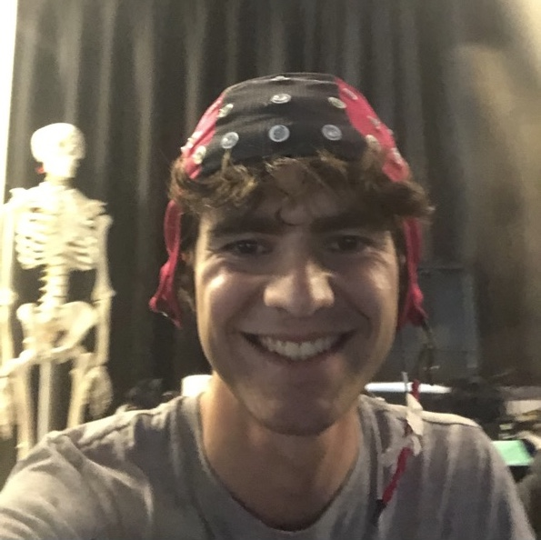
EEG Data collection for an experiment on gait perturbations.
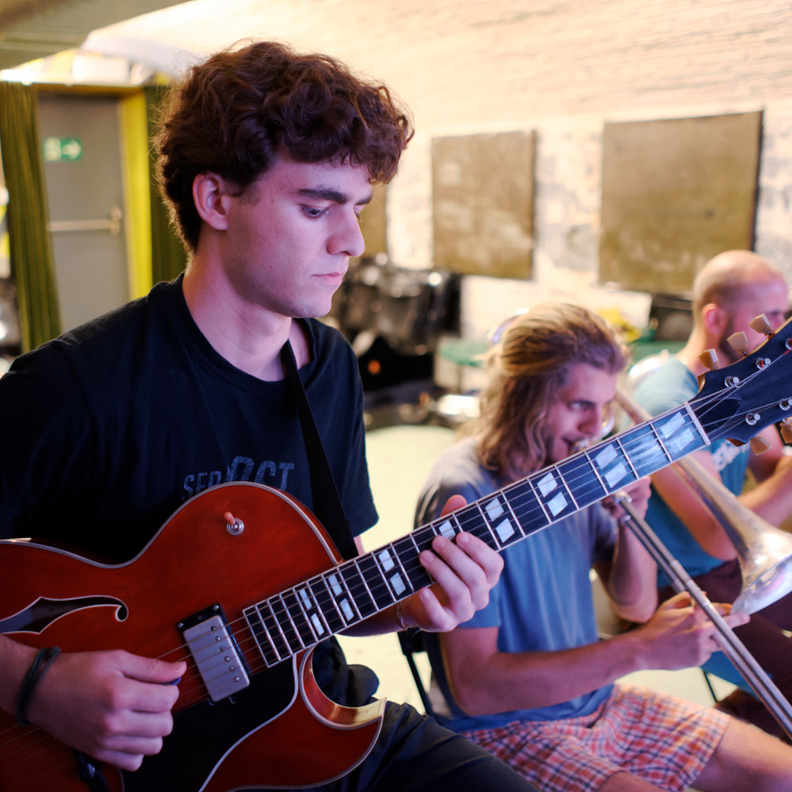
Reherasal with Chtabam Kalam for a performance at the Festival des Cropettes organized by the AMR.
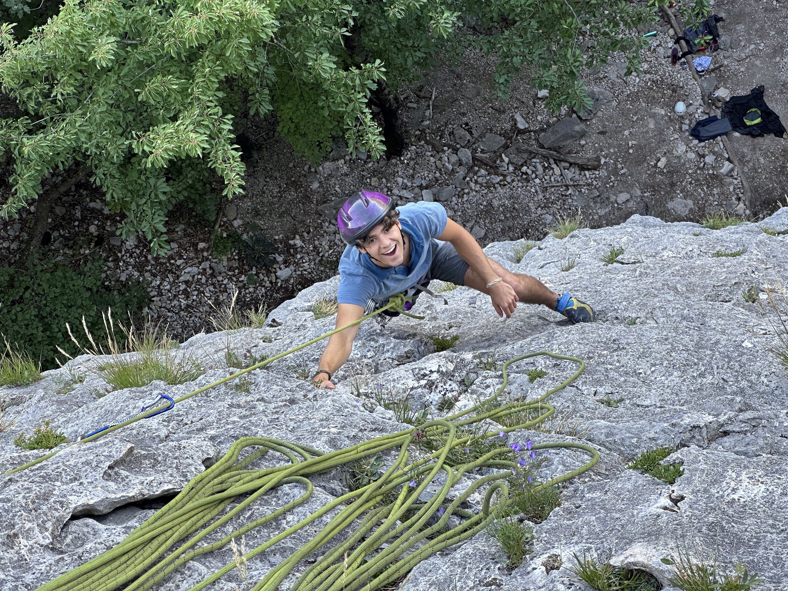
Rock climbing at the Salève (Voie Le petit Prince au secteur Bütikofer)
June 2026
Natural, unconstrained behaviour is among the most complex expressions of an individual’s internal state, simultaneously reflecting an organism’s sensorimotor, motivational, and cognitive condition. This complexity is often described in terms of hierarchical organisation, yet it is rarely recovered in full. In fact, while recent advances in pose estimation and segmentation allow some aspects of it to be retrieved, the structure recovered is often pre-imposed by the model applied to the behaviour of interest. In this thesis we introduce two extensions to hBehaveMAE, a hierarchical masked autoencoder for unsupervised behavioural representation learning. On the synthetic benchmark Shot7M2, a nested dropout strategy is shown to recover hierarchical organisation without any prior spatio-temporal structure. On a multi-strain, multi-age, multi-phase open-field arena dataset, a length-agnostic implementation, using YaRN positional embeddings, enables variable-length inference over long, naturalistic recordings and yields behavioural embeddings that strongly discriminate between 80 different strains, while also capturing age- and phase-related structure. We additionally discuss the spatio-temporal definition of hierarchy, relating the strength of the hierarchical signal present in the data to how strongly it correlates with the hierarchy imposed by the model, and characterise the nested structure observed in the behavioural space extracted from an open-field arena dataset, advocating for less structural bias when studying the complexity of natural behaviour.
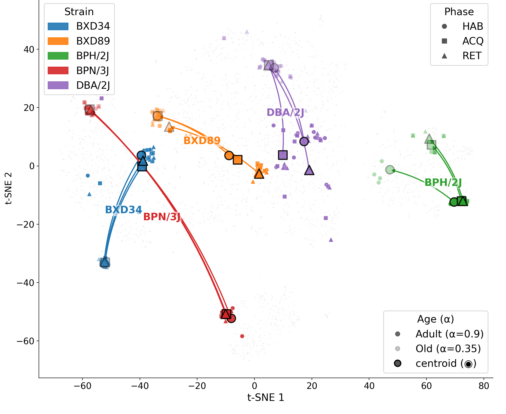
November 2025
The hippocampus plays a central role in both episodic memory and spatial navigation, and recent research has shown that these cognitive processes share overlapping neural mechanisms. In particular, Deuker et al. demonstrated that the hippocampus may encode a spatio-temporal event map, in which neural activation patterns elicited by specific stimuli are correlated with the remembered spatial locations of those stimuli. The present study followed a design closely modeled on that of Deuker et al., with several additional elements. Importantly, our design allows the comparison of encoded stimuli with newly presented stimuli, extending the analysis beyond Deuker et al.’s focus on encoded stimuli alone. Although we were unable to fully reproduce Deuker et al.’s findings, our results reveal related patterns while also questioning the mnemonic aspect of the picture viewing task, a crucial aspect in the retrieval of the spatio- temporal event map
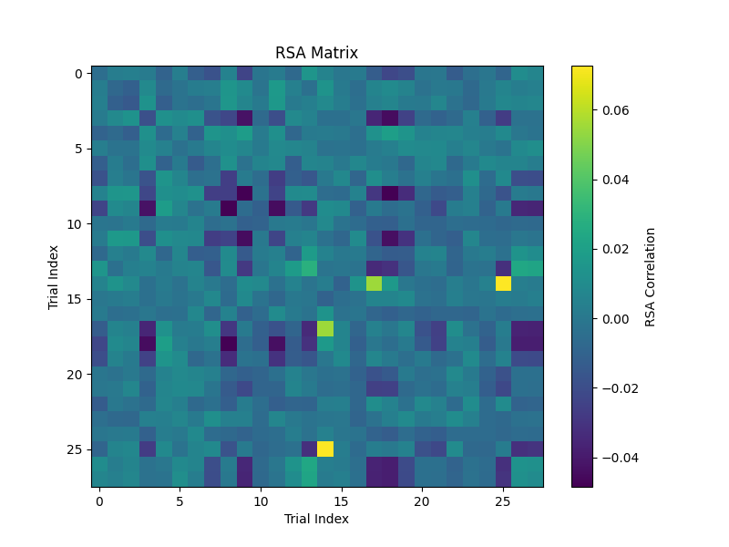
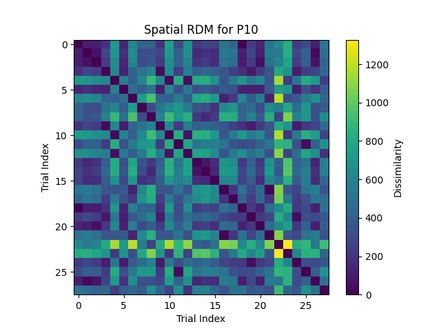
December 2025
Mechanical thrombectomy has become the standard of care for acute ischemic stroke, a leading cause of death and long-term disability worldwide. However, these procedures often rely on X-ray fluoroscopic imaging, which is highly dependent on blood flow and thus fails to estimate the precise size of the clot interrupting the blood flow. This study presents a novel approach for real-time estimation of clot length based on force sensor signals and imaging data using a GRU model architecture. Promising results are shown, with models predicting the start and end of the clot with accuracies of 76.19\% and 61.9\%, respectively, within a 1.5 mm confidence margin and an inference time of 0.5319 ms. This method nevertheless remains a proof of concept and requires further investigation and validation.
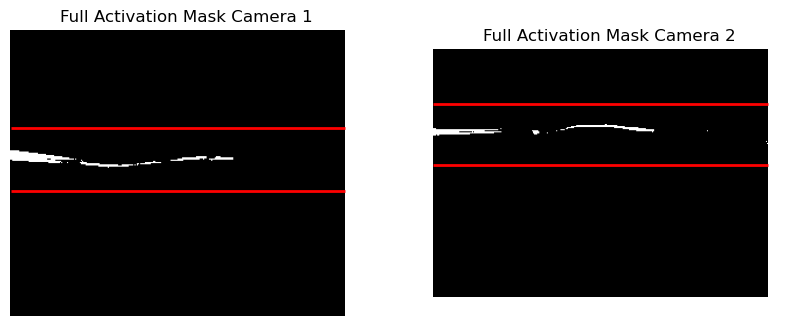
November 2022
Implementation of a Sudoku-type puzzle game in SwiftUI crowd-funded and made available on the AppStore for a duration of two years.
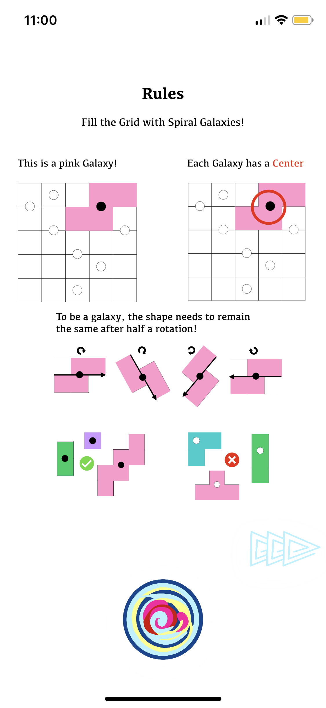
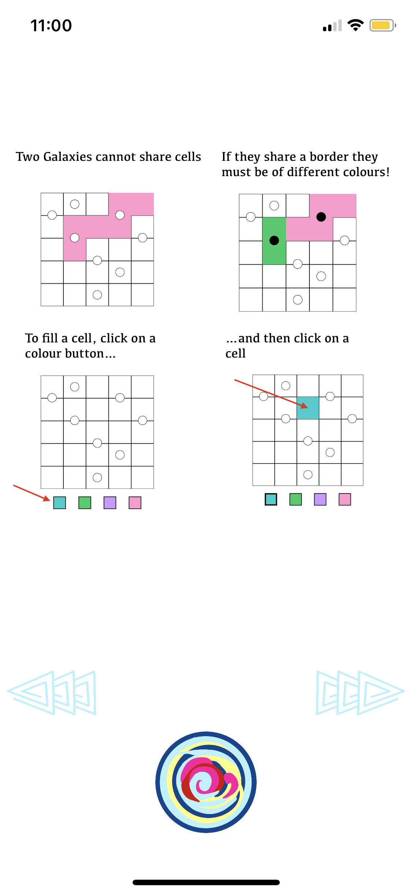
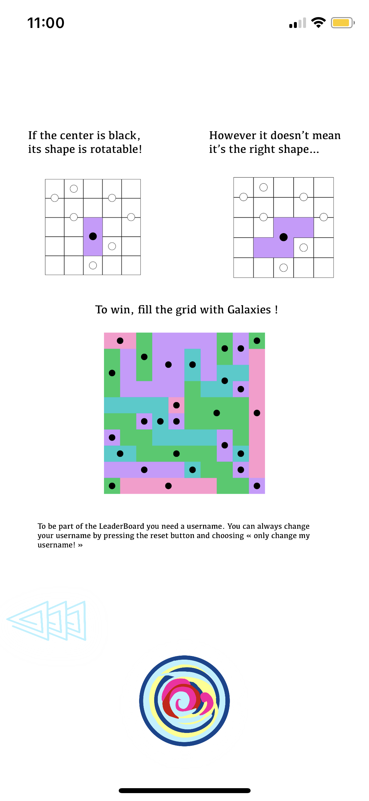
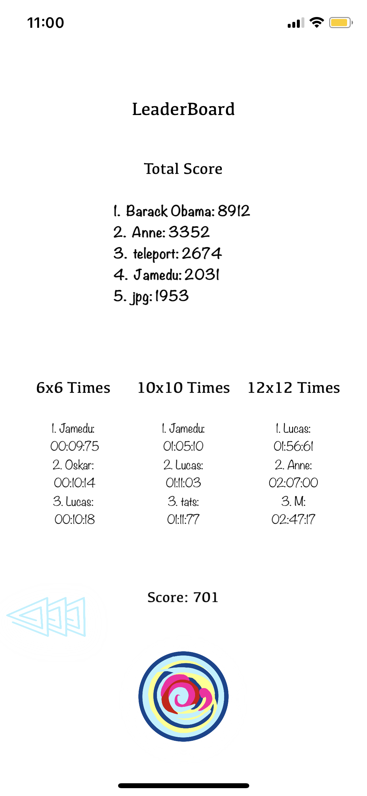
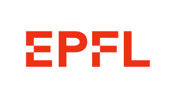
2024 – July 2026
EPFL (École Polytechnique Fédérale de Lausanne)
Grade average: 5.5/6. Master project nominated for the Neuro-X Best Master Project Prize; carried out in Prof. Alexander Mathis's lab on behavioural analysis and machine learning.
2023 – 2024
DTU (Technical University of Denmark)
Exchange semester as part of the MSc in Neuro-X.
2021 – 2023
EPFL
Grade average: 5.38/6.
Aug 2016 – Jun 2020
Collège Claparède
Bilingual Maturity in English. Advanced Maths and Physics modules. Astrophysics complementary option. Music prize for both composition and performance, incl. a 6-month exchange at Cairns SHS (Australia).
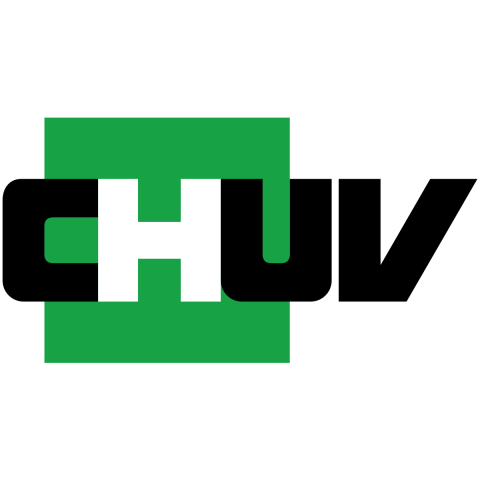
Aug 2026 – Present
Leenaards Memory Center, CHUV
Fulfilling Swiss civilian service obligations; contributing to clinical research on memory and neurodegenerative disorders.
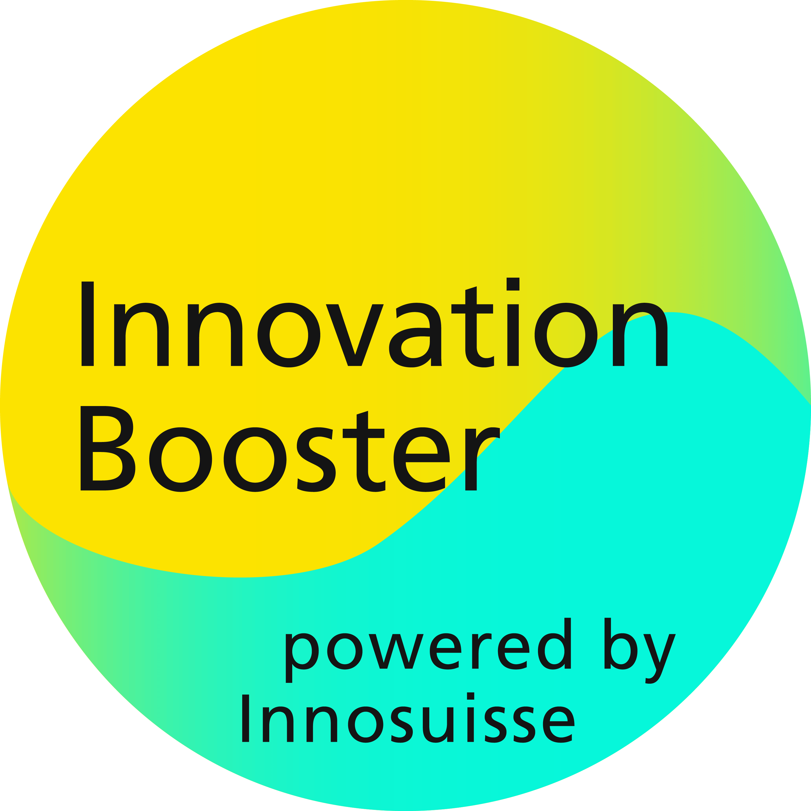
April 2025 - June 2025
Developed kinematic data capture software to improve patient recovery and actively participated in pitching the project, presenting to stakeholders, and guiding its translation from concept to a practical solution.
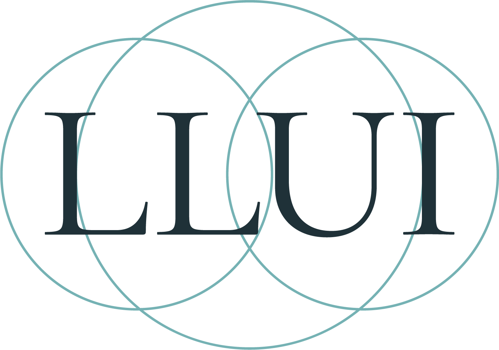
June 2024 - July 2024
Lake Lucerne Institute
Internship working on a project of a low budget home assessment tool for upper limb movement quality. Video processing, pose estimation and Android development.
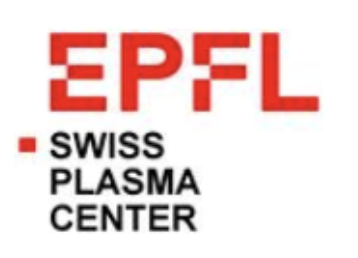
August 2022
Swiss Plasma Center (EPFL)
Internship in the bio-lab SPC on a project of Dielectric Barrier Discharge-based Sterilization.
Feel free to reach out for collaborations, discussions, or just to say hello!